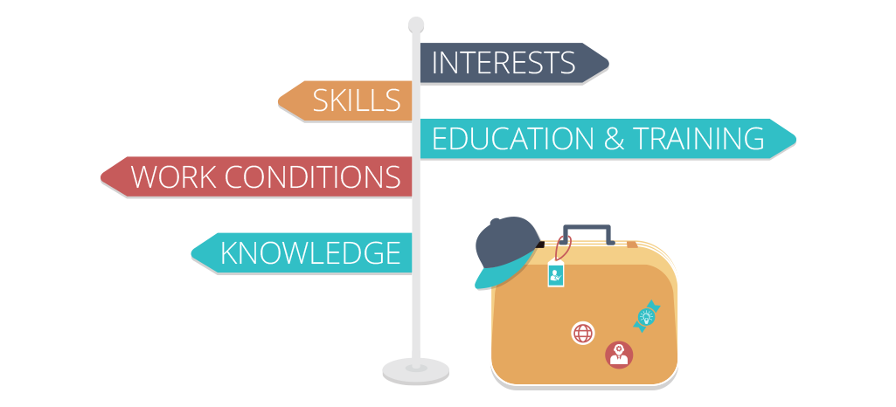

What is Passion?
With passion being a feeling, it's hard to create a definition everyone can use since everyone could treat it as a different thing. I believe that a passion is a certain feeling towards something that tells us that we love that subject. Different people are passionate about different things, and that's okay. Many people have trouble finding what their passion is, but I didn't take me that long. In my perspective, all you have to do to find your passion is to try many different things and find things that you like, it's possible that a person could have multiple passions, so if you didn't already find yours, keep on looking!
What I learned from this experience

After doing a lot of searching for your passion, you also learn a lot about yourself. Many people can judge us, and we probably judge ourselves as well, but looking for your passion helps reveal who you are as well as what your passion is. Wether you find that you're actually a daredevil or maybe someone who can talk about subjects for hours, we should all be able to learn a thing or two about ourselves. I have learned that I'm not as independant as I thought. I like doing and learning things by myself, but for the most part, it's better for me when I can get some help. It's suprising to live your life thinking that you do something in a certain way, but as it turns out, you're actually doing something else!